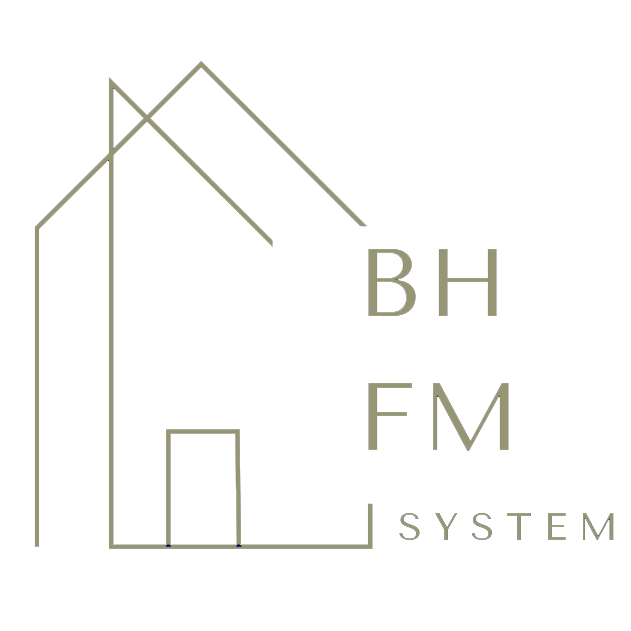

BHFMS is a marketplace plus operations dashboard for tenants, owners, and admins.
Demo
Watch the project demo on YouTube:
Background & Problem
Jakarta's growing urbanization and high housing costs make boarding houses essential for students and workers. Existing platforms only focus on listing properties; they lack operations features (payment management, complaints, inventory), verified information, and seamless communication between tenants and landlords.
BHFMS fills this gap by unifying search, management, and communications in a single VILT-stack web platform. It was developed with Aditya Winata and Gardion Philipus Saltana at Bina Nusantara University, supervised by Pualam Dipa Nusantara, S.Kom., M.Kom.
Project Overview
- Centralized discovery: search and filter kos-kosan by location, price, facilities, and more.
- Verified operations: owners and managers manage tenants, payments, complaints, and property inventories.
- Effortless communication: tenants chat with owners/managers, upload payment proofs, and raise complaints; admins ensure trust and moderation.
Role-based access ensures each user group (tenant, owner/manager, admin) has the right tools.
Features by Role
- Tenant: search, distance filter, rich listings, wishlist, reviews, chat, complaints, payment-proof uploads.
- Owner/Manager: dashboards for properties, tenants, payments, inventory, complaints, and chat.
- Admin: listing verification, transaction oversight, moderation, pre-publish approvals.
Smart Search: Haversine Formula
BHFMS ranks boarding houses by true real-world distance to the user's target location using the great-circle (Haversine) distance, with pre-filtering by bounding box for performance.
$lat = (float) request('lat');
$lon = (float) request('lon');
$R = 6371; // km
$haversine = "(
$R * 2 * ASIN(
SQRT(
POW(SIN(RADIANS(properties.latitude - ?) / 2), 2) +
COS(RADIANS(?)) * COS(RADIANS(properties.latitude)) *
POW(SIN(RADIANS(properties.longitude - ?) / 2), 2)
)
)
)";
$properties = Property::query()
->select('properties.*')
->selectRaw("$haversine AS distance_km", [$lat, $lat, $lon])
->orderBy('distance_km')
->paginate(20);
Laravel/SQL implementation of the Haversine distance search.
Bayesian Rating: Fair Rankings
To avoid a single 5-star review boosting a brand-new listing to the top, BHFMS ranks properties with a Bayesian average instead of a plain mean:
bayesian_rating = (v / (v + m)) * R + (m / (v + m)) * C
- R: average rating for the property
- v: number of reviews for the property
- m: minimum reviews required for confidence (e.g., 5 or 10)
- C: mean rating across all properties
Properties with few ratings are pulled toward the global mean C; as reviews grow, the score reflects the property's real reputation. This prevents new or manipulated listings from unfairly topping search results.
Tech Stack
"BHFMS proved that technology can bring structure and trust to everyday living by connecting people and places through critical design."